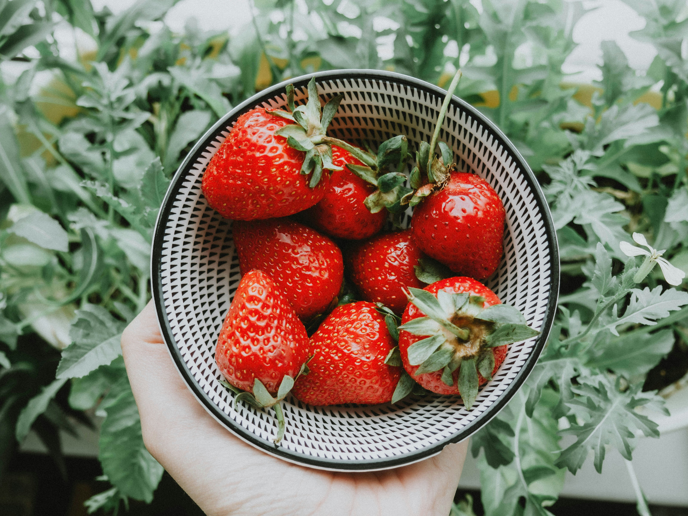
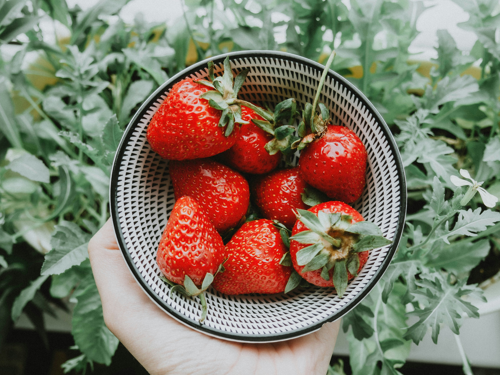

Anasayfa
Magnolya Tarifi
Malzemeler
- 1 litre süt
- 1 su bardağı toz şeker
- 2 yemek kaşığı un
- 2 yemek kaşığı mısır nişastası
- 1 adet yumurta sarısı
- 1 paket krem şanti (toz halinde)
- 10 adet çilek
- 1 paket bisküvi
Malzeme Görselleri
 



Yapılışı
-
Muhallebiyi Hazırlayın: Tencereye sütü, toz şekeri, unu, nişastayı ve
yumurta sarısını koyun. Orta ateşte sürekli karıştırarak kıvam alana
kadar pişirin. Muhallebi kıvamına geldiğinde ocaktan alın ve vanilini
ekleyip karıştırın. Soğumaya bırakın.
-
Krem Şantiyi Hazırlayın: Toz krem şantiyi bir kaba alın ve üzerine soğuk
sütü ekleyin. Mikserle çırparak kıvam almasını sağlayın.
-
Muhallebi ile Karıştırın: Soğuyan muhallebinin içine hazırladığınız krem
şantiyi ekleyin ve mikserle iyice karıştırın. Pürüzsüz bir kıvam elde
edin.
-
Bisküvileri Hazırlayın: Bebe bisküvisini robotta çekerek un haline
getirin. Kedidili kullanıyorsanız, onları da ince bir toz haline
getirin.
- Çilekleri Dilimleyin: Çilekleri ince dilimler halinde kesin.
-
Tatlıyı Katmanlayın: Servis kaselerine veya bardaklarına önce bir kat
bisküvi tozu ekleyin, ardından üzerine muhallebiden koyun. Muhallebinin
üzerine muz dilimlerini yerleştirin. Bu işlemi malzemeler bitene kadar
katmanlar halinde tekrarlayın.
-
Servis Edin: Soğuyan magnolyayı üzerine bisküvi tozu serperek servis
edin. Afiyet olsun!